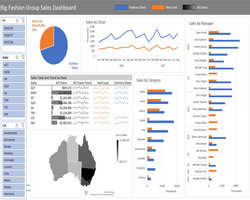

Projects
Wildfire Prophet
As part of the UC Berkeley MIDS Capstone program, our team developed Wildfire Prophet, a machine learning-powered MVP designed to help insurance companies detect wildfires earlier, improve underwriting accuracy, and reduce risk exposure. We tackled the rising global challenge of wildfires by leveraging high-resolution satellite imagery, computer vision, and deep learning models such as CNNs, VGG, and ResNet. Our solution identifies fire-prone regions and offers real-time fire probability insights, empowering insurers to respond proactively. The project explored the generalizability of wildfire prediction models across geographies using various model combinations and dataset filters. This work was a collaboration between Liang Li, Iris Lew, and myself.
üîç Explore the Project
Wildfire Prophet | A comprehensive view of the Wildfire Prophet project, showcasing everything from data processing, modeling, and experimentation to deployment.
UC Berkeley Project Page | The official project summary is featured on the UC Berkeley School of Information website, highlighting the project's objective, impact, and high-level outcomes.
Movie Chatbot
This is a simple conversational AI chatbot that answers movie-related questions. It uses the OMDb API to fetch movie data, stores information using a vector database (ChromaDB), and supports structured queries with a GraphQL API. The front end is built with Streamlit and leverages Retrieval-Augmented Generation (RAG) to provide more accurate answers. I built this project to explore how different technologies like vector search, APIs, and conversational interfaces can work together.
Please refer to the demo video below to see how it works in practice.
Tableau Dashboard - World Business

I followed the webinar from Simililearn and used the business data to develop a Tableau Dashboard. This dashboard contained a title, the legends, and three major charts/graphs such the bar chart and the line chart. Based on the particular country/countries, we were able to see the number of days to start a business, the ease of operating businesses with businesss tax rates, and the phone and internet usage. We could filter to show the data of the selected country/countries.
Reference: Simplilearn. Tableau Dashboard | How To Create Tableau Dashboard | Tableau Training For Beginners | Simplilearn. [ONLINE] Available at: https://youtu.be/Hr5IE0qYkRs.
Tableau Dashboard - World Economy

I followed the webinar from Simililearn and used the economy data to develop a Tableau Dashboard. This dashboard contained a title, the legends, and three major charts/graphs such as the world map, the bar chart and the scatter plot. Based on the particular country/countries, we were able to see the overall GDP, the GDP on Healthcare, and the GDP vs GDP per Capita. We could also filter the data to show the data of the selected country/countries.
Reference: Simplilearn. Tableau Dashboard | How To Create Tableau Dashboard | Tableau Training For Beginners | Simplilearn. [ONLINE] Available at: https://youtu.be/Hr5IE0qYkRs.
Tableau Dashboard - World Health

I followed the webinar from Simililearn and used the health data to develop a Tableau Dashboard. This dashboard contained a title, the legends, and three major charts/graphs such as the world map, the heat map and the line chart. Based on the particular year/years and a selected country, we were able to see the birth rate rank map, the heat map for average birth rate, average health expenditures over GDP, average infant mortality rate, and the average life expectence, and the line chart for average life expectency for male and female. We could also filter the data to show the data of the selected year/years and a country.
Reference: Simplilearn. Tableau Dashboard | How To Create Tableau Dashboard | Tableau Training For Beginners | Simplilearn. [ONLINE] Available at: https://youtu.be/Hr5IE0qYkRs.
Tableau Dashboard - World Population

I followed the webinar from Simililearn and used the population data to develop a Tableau Dashboard. This dashboard contained a title and three major charts/graphs such as the world map, the trend line and the pie chart. Based on a particular year and a selected country, we were able to see the world population contribution, the world popuation trend, and the populations comparison between Asia and the rest of the world.
Reference: Simplilearn. Tableau Dashboard | How To Create Tableau Dashboard | Tableau Training For Beginners | Simplilearn. [ONLINE] Available at: https://youtu.be/Hr5IE0qYkRs.
Power BI Dashboard
I followed the webinar from MyOnlineTrainingHub and used the fictitious data to develop the Power BI Dashboard with the use of Power Query to import, clean and load data. This dashboard contained two tabs: Summary and Regions & Chain. It displayed multiple visuals such as bar chart, bubble chart, pie chart, and slicers. I also imported a custom visual chart to show data in sparklines. This dashboard was published to the My Workspace in Power BI for viewing.
Reference: MyOnlineTrainingHub. Creating Interactive Excel Dashboards. [ONLINE] Available at: https://www.myonlinetraininghub.com/excel-webinars#pbi_anchor.
In case you don't have Power BI installed, I recorded the video to show the interactive dashboard.
Interactive MS Excel Dashboard - Power Query & Power Pivot

I followed the webinar from MyOnlineTrainingHub and used the fictitious data to develop the interactive dashboard with Microsoft Excel 365 with the use of Power Query and Power Pivot. It contained multiple pivot tables, grouped slicers, line charts, bar charts, pie charts, sparklines and Maps.
Note: Due to Excel limitation, the links to the external workbooks/sources are disabled and not supported.
Reference: MyOnlineTrainingHub. Creating Interactive Excel Dashboards. [ONLINE] Available at: https://www.myonlinetraininghub.com/excel-webinars#dpq_anchor.
In case you don't have MS Excel installed, I recorded the video to show the interactive dashboard.
Interactive MS Excel Dashboard - Pivot Tables
I followed the webinar from MyOnlineTrainingHub and used the fictitious data to develop the interactive dashboard with Microsoft Excel 365 with the use of multiple pivot tables, grouped slicers, line charts, bar charts, pie charts, sparklines, and Maps.
Reference: MyOnlineTrainingHub. Creating Interactive Excel Dashboards. [ONLINE] Available at: https://www.myonlinetraininghub.com/excel-webinars#dash_anchor.
In case you don't have MS Excel installed, I recorded the video to show the interactive dashboard.